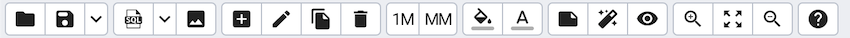
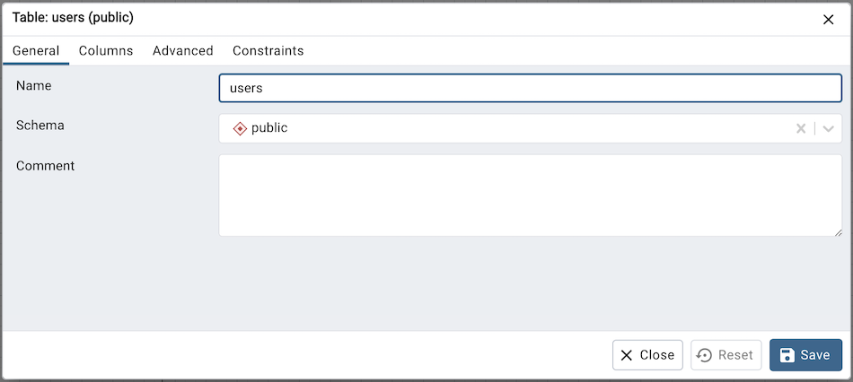
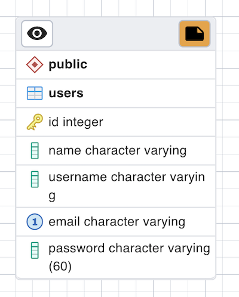
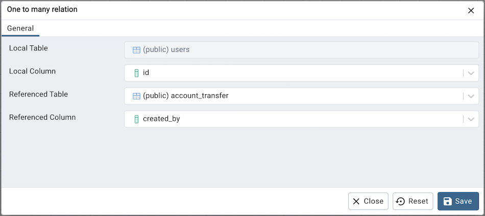
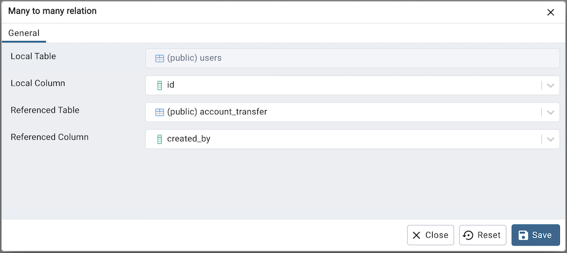
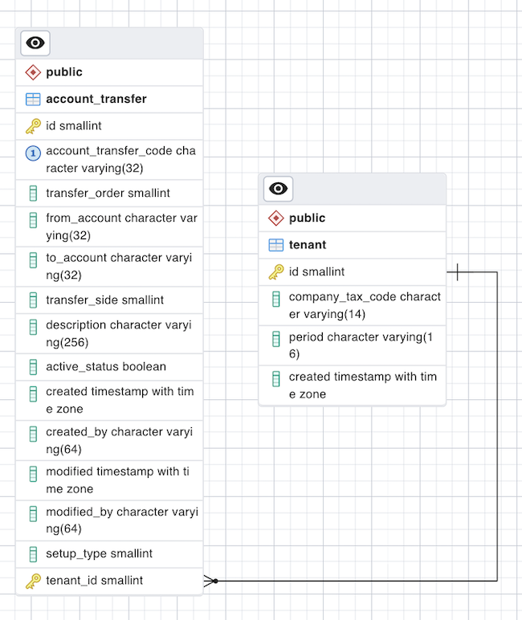
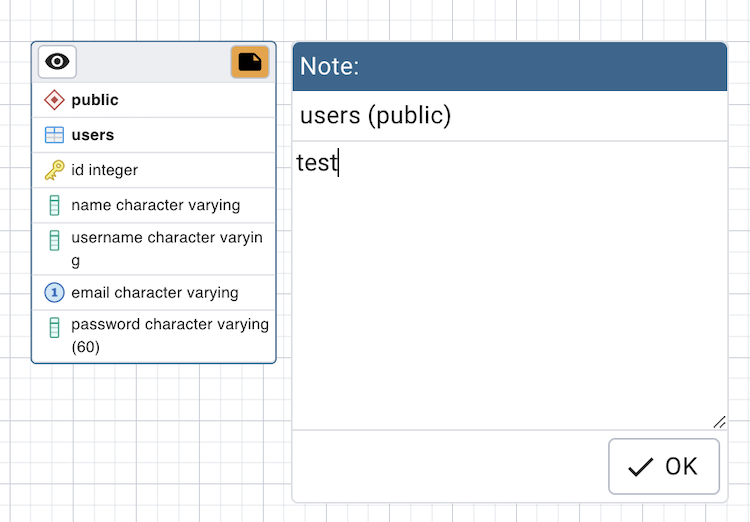

ERD Tool¶
The Entity-Relationship Diagram (ERD) tool is a database design tool that provides a graphical representation of database tables, columns, and inter-relationships. ERD can give sufficient information for the database administrator to follow when developing and maintaining the database. The ERD Tool allows you to:
Design and visualize the database tables and their relationships.
Add notes to the diagram.
Auto-align the tables and links for cleaner visualization.
Save the diagram and open it later to continue working on it.
Generate ready to run SQL from the database design.
Generate the database diagram for an existing database.
Drag and drop tables from browser tree to the diagram.
You can open multiple copies of the ERD tool in individual tabs simultaneously. To close a copy of the ERD tool, click the X in the upper-right hand corner of the tab bar.
Toolbar¶
The ERD Tool toolbar uses context-sensitive icons that provide shortcuts to frequently performed tasks. The option is enabled for the highlighted icon and is disabled for the grayed-out icon.
Hover over an icon on Toolbar to display a tooltip that describes the icon’s functionality.
File Options¶
Icon |
Behavior |
Shortcut |
|---|---|---|
Open File |
Click the Open File icon to load a previously saved diagram. |
Ctrl + O |
Save |
Click the Save icon to perform a quick-save of a previously saved diagram, or to save the diagram to a file. |
Ctrl + S |
Save as |
Click the Save As to open a new browser dialog and specify a new location to save the diagram. You need to click the down arrow beside the save button to see Save As. |
Ctrl + Shift + S |
Export Options¶
Icon |
Behavior |
Shortcut |
|---|---|---|
Generate SQL |
Click the Generate SQL icon to generate the DDL SQL for the diagram and open a query tool with the generated SQL ready for execution. You can select the option With DROP Table if you wish to have DROP Table DDL statements before each CREATE Table DDL. You can see the option by clicking the down arrow beside the SQL button. |
Option + Ctrl + S |
Download image |
Click the Download image icon to save the ERD diagram in a image formate |
Option + Ctrl + I |
Editing Options¶
Icon |
Behavior |
Shortcut |
|---|---|---|
Add table |
Click this button to add a new table to the diagram. On clicking, this will open a table dialog where you can put the table details. |
Option/Alt + Ctrl + A |
Edit table |
Click this button to edit a table on the diagram. On clicking, this will open a table dialog where you can change table details. This will enable when a table is selected. |
Option/Alt + Ctrl + E |
Clone table |
Click this button to clone the complete table structure, name it with a auto generated name and put it in the diagram. |
Option/Alt + Ctrl + C |
Drop table/link |
You can drop a table or link using this button. You need to select a table or link and click on this button to drop it. |
Option/Alt + Ctrl + D |
Table Relationship Options¶
Icon |
Behavior |
Shortcut |
|---|---|---|
1M |
Click this button to open a one-to-many relationship dialog to add a relationship between the two tables. The selected table becomes the referencing table and will have the many endpoint of the link. |
Option/Alt + Ctrl + O |
MM |
Click this button to open a many-to-many relationship dialog to add a relationship between the two tables. This option will create a new table based on the selected columns for the two relating tables and link them. |
Option/Alt + Ctrl + M |
Node Color Options¶
Icon |
Behavior |
|---|---|
Fill Color |
Use Fill Color to change the background color of a table node. This is helpful if you want to identify a of group tables. Once set, all the newly added tables will take the same color. |
Text Color |
Use Text Color to change the text color of a table node based on the fill color to make text easily readable. |
Utility Options¶
Icon |
Behavior |
Shortcut |
|---|---|---|
Add/Edit note |
Click this button to make notes on tables nodes while designing the database. |
Option/Alt + Ctrl + N |
Auto align |
Click this button to auto align all tables and links to make it look more cleaner. |
Option/Alt + Ctrl + L |
Show details |
Click this button to toggle the column details visibility. It allows you to show few or more column details. |
Option/Alt + Shift + D |
Zoom Options¶
Icon |
Behavior |
Shortcut |
|---|---|---|
Zoom to fit |
Click this button to zoom in/out automatically and fit all the tables to the view. |
Option/Alt + Shift + F |
Zoom in |
Click this button to zoom in the diagram. |
Option/Alt + Shift + “+” |
Zoom out |
Click this button to zoom out the diagram. |
Option/Alt + Shift + “-” |
Table Dialog¶
The table dialog allows you to:
Change the table structure details.
It can be used edit an existing table or add a new one.
Refer table dialog for information on different fields.
Table Node¶
The table node shows table details in a graphical representation:
The top bar has a details toggle button that is used to toggle column details visibility. There is also a note button that is visible only if there is some note added. you can click on this button to quickly change the note.
The first row shows the schema name of the table. Eg. public in above image.
The second row shows the table name. Eg. users in above image.
All other rows below the table name are the columns of the table along with data type. If the column is a primary key then it will have lock key icon eg. id is the primary key in above image. Otherwise, it will have column icon.
you can click on the node and drag to move on the canvas.
Upon double click on the table node or by clicking the edit button from the toolbar, the table dialog opens where you can change the table details. Refer table dialog for information on different fields.
The One to Many Link Dialog¶
The one to many link dialog allows you to:
Add a foreign key relationship between two tables.
Local Table is the table that references a table and has the many end point.
Local Column the column that references.
Referenced Table is the table that is being referred and has the one end point.
Referenced Column the column that is being referred.
The Many to Many Link Dialog¶
The many to many link dialog allows you to:
Add a many to many relationship between two tables.
It creates a relationship tables having columns derived from the two tables and link them to the tables.
Left Table is the first table that is to be linked. It will receive the one endpoint of the link with the new relation table.
Left Column the column of the first table, that will always be a primary key.
Right Table is the second table that is to be linked. It will receive the one endpoint of the link with the new relation table.
Right Column the column of the second table, that will always be a primary key.
The Table Link¶
The table link shows relationship between tables:
The single line endpoint of the link shows the column that is being referred.
The three line endpoint of the link shows the column that refers.
If one of the columns that is being referred or that refers is removed from the table then the link will get dropped.
you can click on the link and drag to move on the canvas.
The Table Notes¶
You can use the notes popup to mark some notes while designing the database.
You open the pop-up using the toolbar note button.
If some note is added to a table then it will have notes button on the table node. You can click on the button to check/update notes.